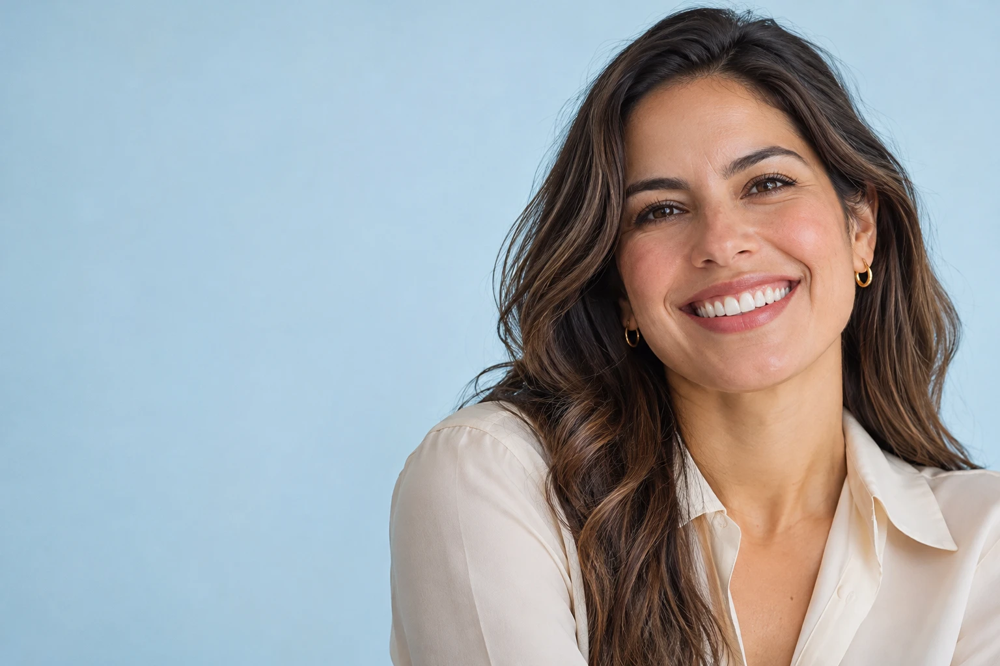
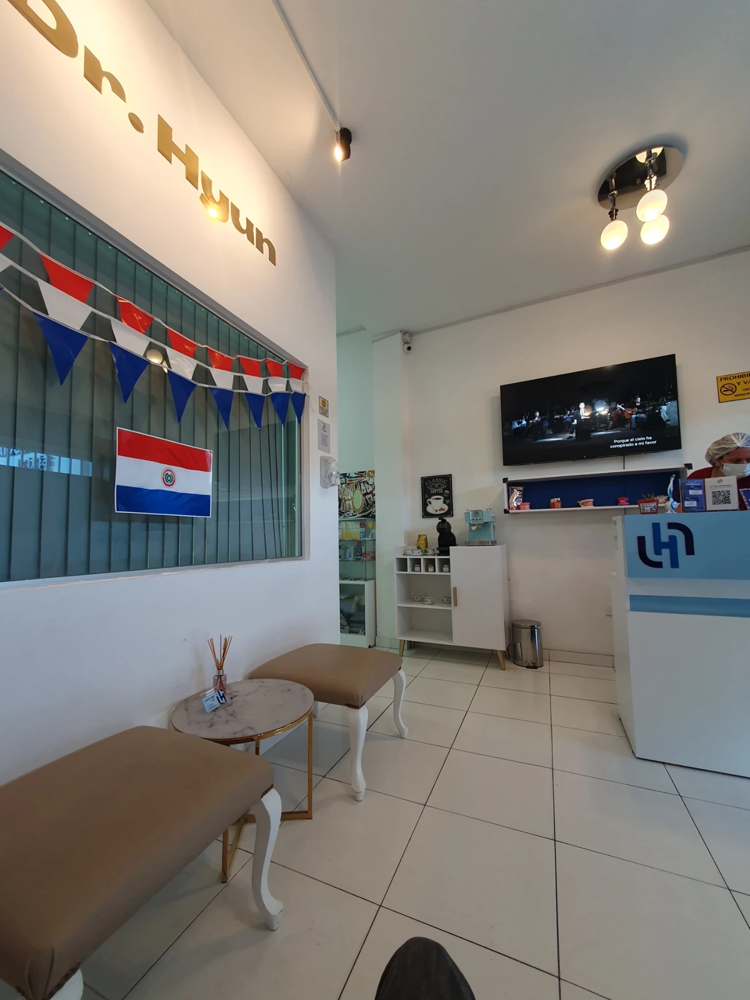

Consulta odontológica
Comparte tus inquietudes y lo que te gustaría mejorar de tu sonrisa.
Atención cercana, orientación clara y un espacio pensado para cuidar tu salud bucal.
Agenda tu cita ↗Conoce nuestra atención →

NUESTRO CONSULTORIO · ASUNCIÓNEn Dr. Hyun Odontología, cada consulta es una oportunidad para escuchar tus inquietudes y conversar sobre tu salud bucal.
Encuéntranos en Av. Dr. José Gaspar Rodríguez de Francia 1175. Te invitamos a coordinar una cita y conocernos.
Conoce el consultorio ↗Comparte tus inquietudes y lo que te gustaría mejorar de tu sonrisa.
Conversa con el profesional sobre tus necesidades y los siguientes pasos.
Consulta las opciones de atención y el seguimiento adecuado para tu caso.
Excelente experiencia con el Dr. Hyun. Su atención y profesionalismo me hicieron sentir muy cómoda. ¡Altamente recomendado!
Estoy más que conforme con la responsabilidad y nivel profesional, asesoramiento y acompañamiento del Dr. Cho y el personal administrativo.
Gracias Dr Hyun Exelente servicio amo mi tratamiento y los resultados